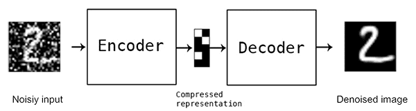

Using autoencoders to clean noise
Autoencoders were able tor reconstruct images which is impressive, but thay can be of more use if they were able to give you a clean image from a noisy image
To achieve this, we create 2 identical sets of images, and then we add noise to one of them, afterwards, during training, we give the noisy images and for the labels we give the clean images, let's see if it distinguishes what's the image and what's the noise
# import libraries
import numpy as np
import torch
import torch.nn as nn
import torch.nn.functional as F
from torch.utils.data import DataLoader
from sklearn.model_selection import train_test_split
# model summary info
from torchsummary import summary
import matplotlib.pyplot as plt
from IPython import display
from matplotlib_inline.backend_inline import set_matplotlib_formats
nGauss = 1000
imgSize = 91
x = np.linspace(-4,4,imgSize)
X,Y = np.meshgrid(x,x)
# vary the weights smoothly
widths = np.linspace(2,20,nGauss)
# initialize tensor containing images
images = torch.zeros(nGauss,1,imgSize,imgSize)
imagesNN = torch.zeros(nGauss,1,imgSize,imgSize)
for i in range(nGauss):
# create the gaussian with random centers
ro = 1.5*np.random.randn(2) # ro = random offset
G = np.exp( -( (X-ro[0])**2 + (Y-ro[1])**2) / widths[i] )
# and add noise
G = G + np.random.randn(imgSize,imgSize)/5
# add to the tensor
imagesNN[i,:,:,:] = torch.Tensor(G).view(1,imgSize,imgSize)
# add a random bar randomly
i1 = np.random.choice(np.arange(2,28))
i2 = np.random.choice(np.arange(2,6))
if np.random.randn()>0:
G[i1:i1+i2,] = 1
else:
G[:,i1:i1+i2] = 1
# add to the tensor
images[i,:,:,:] = torch.Tensor(G).view(1,imgSize,imgSize)
whichpic = np.random.randint(nGauss,size=14)
# visualize some images
fig,axs = plt.subplots(2,7,figsize=(10,3))
for i,ax in enumerate(axs.flatten()):
G = np.squeeze( images[whichpic[i],:,:] )
ax.imshow(G,vmin=-1,vmax=1,cmap='jet')
ax.set_xticks([])
ax.set_yticks([])
plt.show()
# visualize some images
fig,axs = plt.subplots(2,7,figsize=(10,3))
for i,ax in enumerate(axs.flatten()):
G = np.squeeze( imagesNN[whichpic[i],:,:] )
ax.imshow(G,vmin=-1,vmax=1,cmap='jet')
ax.set_xticks([])
ax.set_yticks([])
plt.show()
At the top the noisy images, where I put just a random line that can be either horizontal or vertical, then the clean circles
# create a class for the model
def makeTheNet():
class gausnet(nn.Module):
def __init__(self):
super().__init__()
# encoding layer
self.enc = nn.Sequential(
nn.Conv2d(1,6,3,stride=1,padding=1),
nn.ReLU(),
nn.MaxPool2d(2,2),
nn.Conv2d(6,4,3,stride=1,padding=1),
nn.ReLU(),
nn.MaxPool2d(2,2)
)
# decoding layer
self.dec = nn.Sequential(
nn.ConvTranspose2d(4,6,3,2),
nn.ReLU(),
nn.ConvTranspose2d(6,1,3,2),
)
def forward(self,x):
return self.dec( self.enc(x) )
# create the model instance
net = gausnet()
# loss function
lossfun = nn.MSELoss()
# optimizer
optimizer = torch.optim.Adam(net.parameters(),lr=.001)
return net,lossfun,optimizer
# test the model with one batch
net,lossfun,optimizer = makeTheNet()
yHat = net(images[:10,:,:,:])
# check size of output
print(' ')
print(yHat.shape)
# let's see how they look
fig,ax = plt.subplots(1,2,figsize=(8,3))
ax[0].imshow(torch.squeeze(images[0,0,:,:]).detach(),cmap='jet')
ax[0].set_title('Model input')
ax[1].imshow(torch.squeeze(yHat[0,0,:,:]).detach(),cmap='jet')
ax[1].set_title('Model output')
plt.show()
# a function that trains the model
def function2trainTheModel():
# number of epochs
numepochs = 2000
# create a new model
net,lossfun,optimizer = makeTheNet()
# initialize losses
losses = torch.zeros(numepochs)
# loop over epochs
for epochi in range(numepochs):
# pick a set of images at random
pics2use = np.random.choice(nGauss,size=32,replace=False)
X = images[pics2use,:,:,:]
targets=imagesNN[pics2use,:,:,:]
# forward pass and loss
yHat = net(X)
loss = lossfun(yHat,targets)
losses[epochi] = loss.item()
# backprop
optimizer.zero_grad()
loss.backward()
optimizer.step()
# end epochs
# function output
return losses,net
# test the model on a bit of data
losses,net = function2trainTheModel()
plt.plot(losses,'s-',label='Train')
plt.xlabel('Epochs')
plt.ylabel('Loss (MSE)')
plt.title('Model loss (final loss=%.3f)'%losses[-1])
plt.show()
# visualize some images
pics2use = np.random.choice(nGauss,size=32,replace=False)
X = images[pics2use,:,:,:]
yHat = net(X)
fig,axs = plt.subplots(2,10,figsize=(18,4))
for i in range(10):
G = torch.squeeze( X[i,0,:,:] ).detach()
O = torch.squeeze( yHat[i,0,:,:] ).detach()
axs[0,i].imshow(G,vmin=-1,vmax=1,cmap='jet')
axs[0,i].axis('off')
axs[0,i].set_title('Model input')
axs[1,i].imshow(O,vmin=-1,vmax=1,cmap='jet')
axs[1,i].axis('off')
axs[1,i].set_title('Model output')
plt.show()
Finally the model gives decent results, it can clear the line mostly but the circles are not as crispy as they should, but in general great results